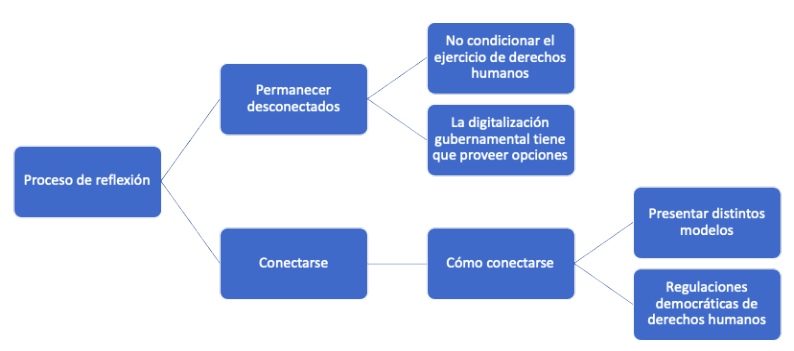

Mantenlo análogo: parámetros para una exclusión voluntaria de la conectividad
por Karla Prudencio y Peter Bloom
Introducción
Hemos escuchado acerca de la brecha digital por décadas. Su urgencia como parte de una agenda va y viene, pero en el contexto de la pandemia del Covid-19, la conversación acerca del acceso equitativo a las comunicaciones digitales ha tomado un rol protagónico dentro de las agendas más urgentes. Si bien la conectividad ha sido inmensamente importante para quienes han podido cosechar sus frutos, es en estos tiempos de crisis en que es posible observar que la misma está fuera del alcance de una parte considerable del planeta. Con esta urgencia, existe también la necesidad de reconocer una innegable paradoja del acceso a internet: también puede facilitar la violación de derechos humanos y erosionar la autodeterminación cultural.
Con esto en mente, el siguiente texto tiene tres objetivos principales:
- Reflexionar y confrontar las cada vez más evidentes contradicciones de los que trabajan abogando por la conectividad y por la creación de determinadas políticas alrededor de la misma e, incluso, de quienes construyen redes en lugares no conectados (a cuyas filas pertenecemos). Conectar un lugar siempre implica cuestionamientos de orden ético, pero estos han incrementado en los últimos años y es posible observar que nos encontramos en un momento de inflexión, pues cada vez es más evidente que las tecnologías digitales se han centralizado y convertido en monolíticas y problemáticas.
- Entablar un diálogo con la comunidad de los Derechos Digitales, dígase, todas aquellas personas que se organizan y hacen labor alrededor del derecho a la conectividad y de los derechos en el mundo online. En su mayoría, esta comunidad no ha reconocido que, dado que las tecnologías digitales ocupan un lugar hegemónico en la vida diaria, incluso la gente que no las usa o no desea usarlas, termina en contacto con las mismas, resistiendo o apropiándose de ellas. Como tales, los grupos que no desean usar determinadas tecnologías deben de ser incluidos en las estrategias de derechos digitales. Este texto busca profundizar en esta discusión. Además, se mencionan algunas recomendaciones concretas en torno a cómo realizar planteamientos que incluyan estas voces.
- Repensar los parámetros de gobernanza de internet, así como el marco de derechos humanos — en lo general — para ser más inclusivos en torno a los problemas interseccionales que implica el acceso a la conectividad. La gobernanza multisectorial no ha hecho la tarea de incluir distintas voces en torno a este tema, pues se ha concentrado sólo en resolver el problema de la brecha digital y, por otro lado, en reaccionar a las problemáticas que enfrenta la gente que ya se encuentra conectada. La prevención de la violación de los derechos humanos, así como la transformación de los esquemas de conectividad (modelos que muchas veces se relacionan con estos perjuicios) suelen estar ausentes de las conversaciones acerca de la gobernaza de internet. Consideramos que deben de ser incluidos.
La Brecha digital y la crisis del Covid-19
Tanto individuos como instituciones se han volcado hacia la conectividad, principalmente de internet, como una opción para mantener cierta normalidad mientras se obedecen los requerimientos de distancia social. Incluso ahora, que la pandemia ha pasado su primera etapa y en algunos países se han relajado las medidas de confinamiento, pareciera que la migración digital que ocurrió durante la pandemia llegó para quedarse. Esto sólo puede significar que el acceso a internet y los servicios digitales continuarán formando parte esencial de la vida diaria. En algunos casos, esta situación se ha vuelto tan normalizada y se ha arraigado de tal forma que es fácil olvidar que quienes no pueden participar de esta “transformación digital” están siendo excluidos aún más drásticamente que antes. Considérese, por ejemplo, la situación en India, en donde la juventud conectada y conocedora del entorno digital fue capaz de vacunarse, mientras que la población de más edad, con menos acceso a la conectividad y con mayor necesidad de recibir la vacuna, no pudo obtener citas.
De acuerdo a estadísticas oficiales, poco menos que la mitad de la población mundial no está conectada al internet. En América Latina, según las estadísticas más recientes, cerca del 30% de la población no está conectada. El problema de la brecha digital responde a diferentes variables, pero estas pueden categorizarse en cuatro principales: falta de cobertura o disponibilidad de servicios; costo elevado del acceso; carencia de habilidades digitales y, finalmente, que el internet no ofrece contenidos de interés para aquellas personas que aún no están conectadas. Si bien el número de gente conectada crece cada año, la expansión es muy lenta, con un 2-3% anual. Al ritmo actual (que incluso está desacelerándose) tomará décadas conectar a todos aquellos que deseen estarlo.
Reconocer que la brecha digital no puede atacarse con las estrategias ya conocidas ha llevado a numerosas y distintas propuestas. Las compañías de telecomunicaciones, impulsadas por los gobiernos, se han acercado más a las áreas rurales y desconectadas, especialmente durante la pandemia. Por nombrar unos cuantos ejemplos (de docenas posibles), Deutsche Telekom en Alemania otorgó 10GB adicionales a sus usuarios; en Sudáfrica, Telkom hizo un descuento general en precios de banda ancha a los proveedores de servicio de internet. En Estados Unidos, la Comisión Federal de las Telecomunicaciones (FCC por sus siglas en inglés) extendió su iniciativa “Mantener América Conectada” que instruía a las compañías proveedoras de servicios a no desconectar a ningún usuario que incurriera en falta de pagos hasta el final de Junio del 2021. La temporal y obligada benevolencia de las compañías tradicionales de telecomunicaciones ayudó a muchos. Sin embargo, es importante reconocer que no es una estrategia a largo plazo para mejorar la equidad en el acceso a estas tecnologías.
Previo a la pandemia, las compañías del llamado “Big Tech” (Amazon, Facebook, Google, etc.) empezaron a incursionar en el negocio de la conectividad, en muchos casos incluso incentivadas por los gobiernos y con esquemas poco regulados. Además, la sociedad civil y las organizaciones internacionales han financiado y readaptado sus proyectos para encauzar, entre otros, el problema de los costos de acceso. Todos parecen estar de acuerdo, y las voces son cada vez más frontales, en que todo mundo debe estar conectado y tiene que estar conectado ya.
La conectividad: un fin en sí mismo
Los distintos acercamientos que ha tenido el tema de la conectividad son cuestionables, pues se han construido sobre un postulado anquilosado que nadie pone en tela de juicio: estar conectado siempre es mejor a no estarlo y los medios por los que accedes a la conectividad no importan, siempre y cuando, se cumpla la meta de estar online. Dicho de otro modo, la conectividad es percibida como un fin en sí mismo, en vez de ser un facilitador de otras cosas más importantes.
Para comenzar a entender esta lógica, debemos analizar cómo, por qué y quién la articula. ¿Qué implica para la iniciativa privada, los gobiernos y la sociedad civil compartir y participar en la construcción de una narrativa unificada y lineal sobre el problema de la conectividad? “Connect the Unconnected” (Conectar a los Desconectados), “Connecting the Next Billion” (Conectando a los Siguientes Mil Millones), “Internet for All” (Internet para Todos), y “Hyperconnected World” (Un mundo Hiperconectado), son sólo algunos de los ejemplos de este discurso. El discurso y los valores de la agenda que representan rara vez son cuestionados. Por otro lado, la pandemia ha forzado a muchos de nosotros a aceptar un nivel significativamente más alto de control (tanto gubernamental como corporativo) de los espacios físicos y digitales; controles que, en algunos casos, rayan en el autoritarismo. Este es el momento de dar un paso atrás y reflexionar sobre el futuro digital al que nos aproximamos de manera precipitada.
Lo que planteamos puede parecer una ironía, sobre todo viniendo de gente que trabaja directamente con proyectos de conectividad, incluyendo algunos como “Connecting the Unconnected” (Conectando a los Desconectados), pero es a través de esta labor que hemos ganado un entendimiento valioso acerca de las potenciales desventajas de lo que hacemos y de cómo lo nombramos. Debido a nuestra posición, en la que constantemente debemos presentar nuestro trabajo a socios, colaboradores, y para efectos de recaudación de fondos, hemos desarrollado distintos discursos matizados para hablar de las “redes” (acceso a internet) y cómo estas permiten derechos fundamentales como la comunicación, el acceso a la información, así como otros derechos sociales, económicos y humanos. La narrativa se encamina a demostrar cómo la conectividad, en especial al internet, permite a las personas una participación más plena en la sociedad y en la economía.
Si bien todo esto es cierto, es igual de cierto que el internet ha entrado en una fase más ambigua y problemática; una fase de inequidad rampante y de, entre otras problemáticas, erosión a la privacidad. La esperanza inicial de que la arquitectura descentralizada de internet resultara también en una gobernanza descentralizada es claramente una utopía. La realidad es que hoy día unas cuantas compañías son dueñas del internet, tanto en sus capas superiores (contenido y aplicaciones), como de las inferiores (infraestructura); lo que resulta en una centralización sin precedentes de poder y control. También, es cierto e innegable que los gobiernos alrededor del mundo utilizan las comunicaciones digitales para monitorear de manera ilegal las actividades diarias de sus poblaciones.
¿Qué hay detrás de un nombre?
“Conectar a los desconectados”, por tomar un ejemplo, es una frase escuchada de forma común en diálogos en torno al desarrollo. Si analizamos a detalle esta expresión podemos entender algunas de sus problemáticas implicaciones. El primer problema es que categoriza de manera binaria a la gente por su estatus de conectadas o no conectadas, con la intención implícita de mostrar que la persona desconectada está en desventaja. El académico en Estudios de la Comunicación, Ulises Ali Mejías, critica el concepto de “brecha digital” y argumenta que “el discurso la brecha digital implica que un lado tiene a los tecnológicamente avanzados y exitosos y que estos tienen que ayudar a los del otro lado, los tecnológicamente subdesarrollados, atrasados y que se tienen que poner al día.”
La clasificación misma de “desconectados” ya nos sugiere determinadas cosas. Hay pocos ejemplos de un agrupamiento tan burdo, de tantísima gente, alrededor de algún producto o de un servicio. Si acaso, el único término similar es el de “desbancarizado”. Hay bastantes paralelos entre las personas desconectadas y las desbancarizadas, dado que ambas categorías son creadas para definir gente sin acceso a un servicio o bien que, básicamente, trata de llevar a la gente al circuito de la acumulación capitalista, sea esta financiera o de vigilancia.
Cuando hablamos de las personas “desconectadas” estamos hablando de casi la mitad de la población mundial. Más de tres mil millones de personas, de geografías, culturas y realidades completamente distintas. De estos varios miles de millones de personas, ¿hay quienes quieren conectarse? Absolutamente. ¿Constituyen un grupo homogéneo? Para nada. La narrativa de la “conectividad para todos” no reconoce qué características comparten estos grupos de personas más allá de aquella de “no estar conectadas”.
Además, la categorización es reduccionista pues se niega a preguntarse acerca de las identidades políticas, culturales, las realidades, sueños o aspiraciones de las poblaciones que supuestamente intenta redimir. Es, también, instrumentalista en tanto que la condición de “no conectadas” sólo existe debido a que hay un tercero que creó la categoría para organizar sus acciones y pensamientos. Si uno fuese a preguntar a una persona “no conectada” su percepción sobre quién es, casi con certeza que no mencionaría este rasgo. Entonces, si las personas “no conectadas” no son un grupo propiamente definido, ¿cómo es que pueden aceptar de manera unánime que la conectividad se les otorgue?
De todas estas problemáticas omisiones, se implica también que las personas “no conectadas” provienen de un contexto acultural y ahistórico y que sólo tienen una necesidad: ser salvados de ellas mismas a través de la tecnología”. Más aún, la narrativa de la “conectividad para todos” invisibiliza las injusticias estructurales, así como las diversidades culturales y políticas. La idea de que existe una categoría de persona “desconectada” cuyos entornos desafiantes y su estatus disminuido puede ser resuelto con una solución estándar, desarrollada por aquellos más “iluminados”, es un síntoma mismo de la violencia estructural edificada sobre siglos de colonialismo y, más recientemente, capitalismo neoliberal.
Como tal, el discurso falla en no poner atención a las causas de raíz por las cuales la gente se halla en el lado “incorrecto” de la brecha digital, pues ignora las inequidades estructurales que los llevaron a ser incapaces de ejercer sus derechos a comunicarse y acceder a la información. Estas inequidades son el desarrollo asimétrico, la pobreza y la discriminación cultural. Al adoptar esta postura voluntariamente ignorante, aquellos que insisten en conectar “el siguiente millar de millones” (next billion en inglés) muestran así su falta de preocupación por las identidades y los territorios y cómo estos pueden ser amenazados en vez de auxiliados, se refuerza además la idea de que las soluciones a los problemas comunitarios son mejores si vienen de fuera, lo que disuelve la agencia social de sus actores.
El Internet contra todo
Complicando aún más el asunto tenemos el problema de que el término genérico “conectividad” se ha vuelto sinónimo de acceso a internet. Esto es una problemática que crece en tanto que el internet mismo se vuelve una herramienta para la promoción y expansión del capitalismo vigilante, el consumismo, la conducta adictiva y un largo etcétera. La mayoría de la gente quiere que la comunicación desafíe barreras y fronteras para recibir y compartir información. Sin embargo, ahora todo esto implica firmar un pacto con el diablo, que parece cada vez menos atractivo como algo al que valga la pena invitar a otras personas a hacer. Necesitamos ser más conscientes del riesgo de orillar a poblaciones que han sido históricamente vulneradas u oprimidas hacia las prácticas extractivas e inequitativas de las relaciones digitales, bajo la bandera de la reducción de la brecha digital. Una cosa queda clara: no crearemos igualdad en el mundo, digital o físico, si nuestro punto de partida es aglomerar a todas las personas en una categoría, asfaltando la diversidad del mundo real bajo la bandera de una solución unidimensional: la conectividad.
Esta narrativa es problemática pues termina moldeando políticas públicas que refuerzan el solucionismo tecnológico, cuando en realidad deberían de atender a la diversidad de la vida pública y de los servicios críticos. Aún antes de la pandemia, ya se articulaban argumentos, leyes y políticas públicas en pos de la conectividad universal en algunos países del mundo, sin hacerse estos cuestionamientos. Por mencionar algunos ejemplos, en el 2016 la asamblea general de las Organización de las Naciones Unidas pasó una resolución no vinculatoria que declaraba “el acceso al internet como un derecho humano.” En esa misma línea, en el año 2020 Argentina declaró el internet como un servicio público.
Otro ejemplo de cómo esta forma de pensar ha permeado los estratos más elevados de la agenda global durante el Covid-19 es la iniciativa “Connect2Recover” (conectarnos para recuperarnos), la cual se encamina a reforzar la infraestructuras y los ecosistemas digitales de los países beneficiarios. Uno de sus objetivos es el de fortalecer ciertas medidas que contemplan las tecnologías digitales como el teletrabajo, el e-commerce, el aprendizaje remoto y la telemedicina Con el objetivo de apoyar los “esfuerzos de recuperación y prepararlos para la “nueva normalidad””. En esta burbuja pro-internet, las voces distintas no pueden participar para ayudar a definir qué es lo que debe priorizar la sociedad en un mundo post-pandemia.
Más allá de los gobiernos y las naciones, las redes sociales son ahora un medio estratégico, tanto para políticos como para partidos políticos, utilizado con diversos motivos oficiales (anunciar promulgaciones, comunicar políticas públicas, etc.). Algunas cortes de los Estados Unidos han reconocido la importancia de estas interacciones en la esfera de las redes sociales, reconociéndolas como una “plaza pública moderna”. Más aún, se ha argumentado que si los servidores públicos bloquean usuarios basándose sólo en sus opiniones se contravendría la Primera Enmienda. Esta perspectiva ha sido reiterada en países como México, donde la Suprema Corte de Justicia de la Nación ha reafirmado que los servidores públicos, al usar redes sociales, no pueden bloquear usuarios que plantean posturas críticas; es posible bloquear a alguien sólo si la conducta constituye un crimen o un abuso. Estas resoluciones, si bien son consideradas como victorias por la sociedad civil, tienen también la consecuencia inesperada de legitimar la entrega de información oficial a través de plataformas comerciales, ignorando a la gente que no está atendiendo estas redes o que no desea hacerlo.
Ya sea en el plano local o global, estos ejemplos se suman a la postura de que el internet es ahora un servicio público esencial y por tanto deben de crearse políticas públicas para asegurar que la gente pueda tener acceso. De seguir esta lógica, si a alguien se le niega el acceso al internet, se le está negando la integridad de su ciudadanía así como su participación en la vida pública. Por un lado, se puede aplaudir a los estados por consagrar un nuevo derecho o establecer nuevos servicios públicos básicos, pero por el otro lado, también hay que cuestionar si esto es lo correcto. Incluso Vint Cerf, uno de los “padres del internet” ha moderado esta postura en una op-ed del 2012 en el New York Times. “Mejorar el internet es sólo un medio, si bien uno importante, de mejorar la condición humana. Debe hacerse tomando en cuenta los derechos civiles y humanos — que deben ser protegidos a toda costa. No se debe pretender que el acceso mismo es en sí un derecho.”
Los derechos humanos tradicionales como la educación y la salud ahora son mediados por tecnologías de la conectividad que son, a su vez, vistas casi en el mismo escalafón de importancia. Esto rara vez es cuestionado como algo problemático, pero representa una distracción real, dado que enmascara décadas de erosión neoliberal de los servicios públicos, al mismo tiempo que se busca resolver problemas profundamente arraigados y complejos con una curita: el internet. En otras palabras, esta lógica se desentiende de la raíz del problema y propone una solución incompleta y potencialmente dañina.
¿Subconectadas o sobreconectadas?
Dado que la frontera de acceso se expande lentamente, en el futuro cercano muchas comunidades dejarán de estar excluidas de la esfera digital. Sin embargo, estas poblaciones son las que con más probabilidad vean vulnerados sus derechos digitales, pues los esquemas que buscan conectar comunidades rurales y poblaciones pobres, en pos de conectar a todo el mundo, tienden a ignorar políticas de protección de datos y costumbres locales. En muchos casos esto va más allá de la insensibilidad, percibiendo esta diversidad de características de las comunidades como obstáculos a ojos de quien realiza la conexión.
Reconocemos que es lento y es caro comprometerse en cada comunidad y ajustar la conectividad a las necesidades locales. Es también complicado generar una ganancia monetaria en lugares muy pobres, como son muchos de los lugares sin acceso a internet. Por lo mismo, se han diseñado nuevos métodos de acumulación que tienen como objetivo que cada emprendimiento sea rentable, como lo es la “plataformización” de algunos esquemas de conectividad. Por ejemplo con el Big Tech, que ofrece servicios de menor calidad en territorios nuevos en donde el modelo de negocio se basa en la extracción y la venta de los datos personales.
Un ejemplo flagrante de esto es la iniciativa de Facebook “Free Basics”, una alianza entre Facebook y operadores móviles que ofrecen un acceso “esencial” a servicios online sin cargos por el uso de datos. Esto, sin embargo, es problemático pues Facebook ha promovido su producto como algo que permite “que la gente experimente la relevancia y los beneficios de estar en línea gratuitamente”, cuando en realidad están limitando sus opciones, accediendo a los datos personales, vendiendo datos de comportamiento y posicionando sus marcas.
Podemos extrapolar otras amenazas a las que pueden estar expuestas las personas recién conectadas, al mirar las consecuencias negativas de estar sobreexpuestos y atrapados en el mundo digital en lugares ya conectados. Por ejemplo, en lugares plenamente conectados, la automatización laboral tiene implicaciones significativas para los derechos laborales. Los trabajos de manufactura que los robots reemplazan “vienen de partes de la fuerza laboral sin muchas otras opciones laborales.” A nivel individual, el acceso ubicuo a la tecnología digital y la conectividad está deprimiendo a los adolescentes y generando tendencias suicidas, si los comparamos con generaciones previas.
Cada interacción en línea está sujeta a riesgos en la privacidad, sometimiento a la vigilancia, así como fraude, engaños, y exposición a las fake news. La centralización del poder le ha dado a unas cuantas compañías un dominio avasallador sobre cómo accede la gente a la información, quién tiene una voz válida y cuándo la puede utilizar. Por ejemplo, los algoritmos de Google son los que determinan el resultado de la mayoría de las búsquedas a nivel mundial, curando el acceso a la información y determinando la percepción de lo que es real para miles de millones de personas.
Los lugares ya conectados han tendido a introducir tecnologías de vigilancia que suelen lacerar el ejercicio de los derechos humanos, especialmente para las minorías raciales o étnicas, ya de por sí vulneradas por el Estado. Estas tecnologías, poco o nada reguladas, habitúan a reafirmar prejuicios de género y raza, cosa que tiene implicaciones en cómo se comportan las personas en las ciudades y en los distintos territorios.
Un nuevo marco de derechos
En un momento en el que tantos pujan por aumentar la conectividad, sus aspectos negativos deberían de obligarnos a hacer una pausa y motivarnos a crear maneras más equitativas y respetuosas de subir a la gente al “barco de la conectividad”, esto en un trabajo que incluya, también, un marco de referencia para aquellas personas que desean no estar conectadas. Esta cuestión no sólo se trata de quién decide no estar conectado, y vivir con las consecuencias; sino de establecer procesos y aproximaciones colectivas para definir cómo es que las poblaciones y los territorios quieren ser involucrados, o no, en la conectividad; se trata de desarrollar mecanismos para que las decisiones sean respetadas y llevadas a buen puerto.
Nuestra propuesta es cambiar la perspectiva de cómo los gobiernos, las compañías y la sociedad civil se aproximan a aquellas personas “no conectadas” y cómo las políticas de conectividad están siendo creadas. En vez de comenzar asumiendo que el derecho de las personas “no conectadas” es que las conecten, debemos perseguir un punto de partida más apropiado, uno que construya y nutra; es decir, crear políticas y procedimientos que faciliten la reflexión en el uso e introducción de determinadas tecnologías. La meta de esta reflexión es que comunidades específicas en lugares particulares tomen decisiones informadas y puedan forjar sus propios destinos digitales o, por otro lado, decidir si se mantienen en el mundo análogo.
Desde el punto de vista de aquellos que promueven la conectividad, es crucial entender quién quiere que lo conecten y por qué, qué beneficios y riesgos ven y cómo las comunidades creen que estos procesos cambiarán su relación con el territorio que habitan. El primer paso es el consentimiento informado (tanto colectivo como individual), y realizar algo parecido a un análisis de impacto ambiental (pero en materia de conectividad). Siguiendo estos parámetros, los proyectos de conectividad deben basarse en la lenta y difícil labor de entender las aspiraciones y necesidades de cada comunidad antes de llegar a la parte de “conectar”. En algunos casos, probablemente no se llegue a la conexión, dado que así lo desean las comunidades.
Facilitar este proceso requiere que las comunidades tengan información clara sobre los riesgos y beneficios que implica conectarse. Si el proceso se hace por personas fuera de la comunidad, deben asegurarse de que haya un diagnóstico para entender quién es el destinatario y qué factores son pertinentes en dicha comunidad. Este diagnóstico o “análisis del impacto de la conectividad” debe de considerar impactos interseccionales, los beneficios y los riesgos, examinar factores socio-económicos, culturales y de salud, a nivel comunidad y a nivel individual. Nuestros colegas han desarrollado un método para hacer exactamente esto en la guía “¿Y si repensamos las tecnologías para la comunicación?”
Dado este proceso de evaluación de riesgos y consultas, las comunidades tienen tres opciones:
1) escoger seguir desconectadas
2) escoger conectarse y definir cómo
3) escoger conectarse y permitir a los individuos la exclusión voluntaria
Estas opciones deben de ser entendidas como un subconjunto de derechos con sus propios asegunes y que implican también acciones que debe tomar el estado, la sociedad civil y la industria. Estas tres opciones deben de estar enmarcadas en los derechos humanos, que incluyen, entre otro, los siguientes:
- El derecho a la libertad de pensamiento (art.18)
- El derecho a la libertad de opinión y expresión (art.19)
- El derecho a formar parte del gobierno de su país (art.21)
- El derecho a un estándar de vivienda adecuado para la salud el bienestar propio y de la familia (art.25)
Permanecer desconectadas:
Los derechos legalmente protegidos de aquellas personas que quieren permanecer desconectadas son el derecho a la libertad de pensamiento, opinión y expresión y el derecho a definir los estándares propios de cómo se quiere vivir, de acuerdo a las ideas propias de salud y bienestar. Como ya explicamos antes, dentro del grupo de comunidades pobremente definidas como “no conectadas” algunas comparten características, principios y valores. Estas características son aquellas que las definen como una comunidad; por ejemplo, compartir un territorio, una lengua, tener una relación particular con la naturaleza, procesos específicos de toma de decisiones o una cosmovisión particular. Una vez hecho el análisis, las comunidades pueden decidir libremente si los modelos de conectividad pueden servir a los principios y valores que son la base de su vida en comunidad o si, por otro lado, la conectividad amenaza su forma de vida.
En este caso, si la amenaza es mayor que los beneficios, las comunidades pueden elegir seguir no conectadas. Este derecho es colectivo, porque sirve a un grupo que funciona como una unidad, al final, es la comunidad la que ha tomado la decisión. La intención final de la consulta y del análisis de impacto es una reflexión para que la comunidad pueda proteger los principios y valores que reconocen como fundamentales para su existencia y desarrollo. Debemos tomar en cuenta que el ejercicio de la libertad de pensamiento y libertad de expresión es la forma más adecuada de tomar esta decisión, dado que es la comunidad la que sabrá mejor cómo adaptarse de manera adecuada para proteger tanto su salud como su bienestar (art.25).
Estamos conscientes también que de aceptar el derecho a permanecer desconectadas es necesario cuestionar la tradición legal internacional y nacional que pone el acceso a internet como un habilitador de derechos humanos y que ha puesto en un pedestal a la conectividad. Como ya hemos establecido antes, es tiempo de reconocer los aspectos negativos de la conectividad y cómo se manifiesta en determinados lugares y poblaciones. Bajo este escenario no sería permisible forzar a una comunidad a “pagar el costo de estar conectadas” en contra de su voluntad. Debemos encontrar otras formas de facilitar los derechos humanos fundamentales, como lo son la libertad de expresión, de acceso a la información y de comunicación.
Conectarse:
Es posible que una comunidad colectivamente decida conectarse si valora que las ventajas son más grandes que los riesgos. En este escenario, la segunda pregunta es: ¿cómo llevar a cabo esta conexión? Para responder esta pregunta, las comunidades deben tener otra ronda de reflexión para revisar los modelos de conectividad disponibles. Esto puede resultar en una amplia gama de posibilidades, desde trabajar con un proveedor comercial hasta construir su propia red comunitaria.
De acuerdo con el Alto Comisionado para los Derechos Humanos de las Naciones Unidas, bajo una perspectiva de derechos humanos, los estados deben asegurar que el despliegue de las tecnologías de la información, incluidas las tecnologías de datos, se haga tomando en cuenta la regulación internacional de los derechos humanos. Esta obligación incluye cerciorarse que los proyectos de conectividad se adhieran a la ley y que los gobiernos permitan cierta flexibilidad regulatoria para que sea posible que emerjan diversos modelos de conectividad.
Examinar estos modelos es una parte esencial del proceso para aquellos que desean conectarse, pues cada modelo tiene sus beneficios y sus riesgos. Como se explicó anteriormente, algunos modelos socavan nuestra experiencia en línea; por ejemplo, extrayendo más datos de los necesarios. En contraste, otros modelos podrían contribuir a mejorar el internet y hacerlo un lugar mejor para ejercer los derechos humanos, un ejemplo de ello son las redes comunitarias. La decisión final sobre el modelo a escoger debe tomar en cuenta los principios que cada comunidad entiende como fundamentales para ellos, principios como privacidad, protección de datos, o pluralidad.
La conectividad debe también venir acompañada de adecuados esquemas laborales, así como metodologías que ayuden a las comunidades a enfrentar las amenazas del internet. Esto quiere decir que no es suficiente con conectar un lugar, sino que las capacidades para prevenir los peligros y mejorar el ejercicio de los derechos humanos deben crecer en paralelo.
Exclusión individual voluntaria:
Es necesario también tomar en consideración los derechos del individuo que desea permanecer sin conexión. Este derecho puede ejercerse cuando la comunidad decide colectivamente entrar al mundo digital, pero el individuo tiene otra perspectiva de los peligros que esto puede conllevar en su vida y su salud, o bien, simplemente no le interesa. El derecho a la exclusión voluntaria de la conectividad está construido sobre el derecho al libre desarrollo de la personalidad, que implica en lo general el derecho a la autodeterminación (art.22 y art.29).
Este derecho no tiene las mismas características que el de aquellas comunidades que deciden permanecer desconectadas, porque no proviene de una decisión colectiva. Sin embargo, podría llegar a ser fundamental proteger a los individuos que optan por la exclusión voluntaria, pues esta protección implica proteger su dignidad y su libre desarrollo. Nadie debe ser orillado a una situación en la que su salud mental y/o física estén en riesgo. Los individuos que busquen la exclusión voluntaria tampoco deben de ser discriminados por resistirse a la conectividad y, por lo tanto, al querer participar de otros derechos como el derecho a la educación o el derecho a la salud no deberían enfrentarse a barreras.
Conclusión
En la sección anterior se esbozaron las características de los derechos pertinentes para las comunidades y las personas a la hora de decidir si se conectan o no y cómo lo hacen. Estas características no son en absoluto exhaustivas y la esperanza es proporcionar una base mínima a partir de la cual repensar cómo sucede (o no sucede) la conectividad y dar lugar a conversaciones y diálogos que puedan dar forma a políticas más respetuosas con las personas, los lugares y las preferencias de las personas.
A continuación, hay un conjunto de recomendaciones específicas que podrían seguir las distintas partes interesadas. Tanto el marco de la sección anterior, como las recomendaciones que siguen, deben tomarse como punto de partida para un debate más cuidadoso sobre las posibilidades de afrontar la brecha digital y las innumerables cuestiones éticas y prácticas que conlleva hacerlo bajo un paradigma más inclusivo.
Por muchas razones necesitamos cambiar la forma en que se dialoga acerca del problema de la accesibilidad a las redes; de esta manera, podremos construir una narrativa alterna que priorice la comunicación y la agencia de las personas, más que el acceso sólo por el acceso mismo. Además, es necesario generar una conversación que no asuma que todas las personas quieren estar conectadas a internet. Junto con una nueva narrativa debe haber un marco sólido y basado en derechos que pueda conducir a mejores políticas públicas.
RECOMENDACIONES
Estado
a. Construcción de procesos para la toma de decisiones. Es importante recordar que la industria de las telecomunicaciones y el Big Tech pasan por alto las localidades marginalizadas y rurales pues estas no representan un mercado atractivo para sus productos. Este supuesto fallo en el mercado lleva al estado a asumir la responsabilidad de las alternativas de conectividad en dichos lugares. Esto lleva al estado a proveer el servicio directamente, o a subsidiar actores privados para hacerlo, o a promover regulaciones laxas para que las compañías operen en regiones seleccionadas. De este modo, el estado debe de dar un paso atrás y desarrollar mecanismos que faciliten la reflexión entre los personas no conectadas, basándose en información relevante y precisa. Para que esto ocurra se requiere:
1. Proveer de información precisa a las comunidades no conectadas como parte de una consulta encaminada hacia un análisis de la conectividad local. Esto tiene que incluir información acerca de la infraestructura, el impacto ambiental y los potenciales riesgos y beneficios de la conectividad.
2. Facilitar, cuando las comunidades lo requieran, el proceso de reflexión. Es esencial promover el intercambio de perspectivas y conocimiento entre distintos grupos. El estado, dada su posición, puede ser un buen moderador entre actores para este proceso.
b. Si las comunidades no se quieren conectar. El estado es el principal responsable en hacer respetar las decisiones de las comunidades en la materia. Sin embargo, esto no implica que solamente se crucen de brazos cuando una comunidad decide no conectarse. Sugerimos las siguientes acciones.
1. Es crucial no condicionar el ejercicio de los derechos humanos a la conexión a internet. Como se estableció antes, algunos países confían en la conectividad como un acceso a los derechos fundamentales como la educación o la salud. Si los estados están dispuestos a respetar los derechos que las comunidades tienen a permanecer desconectadas, necesitan proveer de opciones para que se pueda acceder a los derechos fundamentales sin recurrir a la conectividad. Este procedimiento no aplica sólo a los derechos humanos sino, también, habrá de ser extendido a los procesos burocráticos y administrativos.
c. Si la gente quiere estar conectada. El estado también necesita estar preparado en caso de que la gente quiera estar conectada. Reconocemos que existe una vastísima literatura en cuanto a cómo conectar áreas apartadas; sin embargo, podemos resaltar los siguientes puntos:
1. Los estados necesitan presentar todos los modelos de conectividad, dando a las comunidades la opción de escoger modelos que las ayuden a ejercer mejor sus derechos humanos y perseguir más adecuadamente sus objetivos colectivos.
2. Los estados deben imponer regulaciones más estrictas para prevenir que las compañías ofrezcan servicios que violen principios como la neutralidad de la red y que impongan regímenes desfavorables en materia de datos o privacidad para aquellas personas que no pueden pagar.

Sociedad civil
Se debe reconocer que la conectividad no es siempre preferible a la desconexión. Se debe cambiar el foco de atención a escuchar los sueños y las necesidades de las personas y comunidades “no conectadas”. Esto implica las siguientes acciones.
a. Incluir voces diversas en las agendas que imaginen un internet distinto y no dominado por las empresas de telecomunicaciones o por el Big Tech. Esto implica considerar opciones de conectividad que dejen de lado el internet y favorezcan otro tipo de comunicación.
b. Los grupos dedicados a la defensa de los derechos digitales a veces ignoran la relación específica entre los modelos de conectividad y el ejercicio de los derechos humanos. Por ejemplo “acceso a internet” suele ser visto como un derecho digital, como la privacidad o la protección de datos. Sin embargo, determinados modelos de conectividad, como las redes comunitarias, pueden ser más adecuados para la protección de los derechos digitales que aquellos modelos que conectan a cambio de minar los datos personales de las personas usuarias. Más aún, las redes comunitarias permiten reflejar sobre qué principios debemos llevar nuestra actividad en línea y de esta forma incluirlos en la administración y las tecnología de las redes antes y durante la conexión.
Industria/Sector privado
El sector privado también tiene un rol dentro de este marco operativo. Primero, necesitan respetar a las comunidades que quieren permanecer no conectadas y acatar sus decisiones. Aunado a ello, deben realizar las siguientes acciones.
a. Evitar proporcionar a las poblaciones en situación de marginación y a las comunidades alejadas servicios de menor calidad o con menos opciones.
b. Acatar la neutralidad de la red y otras regulaciones destinadas a asegurar que todos tengan un tratamiento igualitario en tanto que su acceso a la internet.
c. Construir y ofrecer productos de “privacidad por diseño” además de no aprovecharse monetariamente de los datos de la gente al generar términos y condiciones del servicio que sólo plantean las opciones de “tómalo o déjalo”. Estas comunidades deben de tener las mismas opciones que aquellas que ya están conectadas.